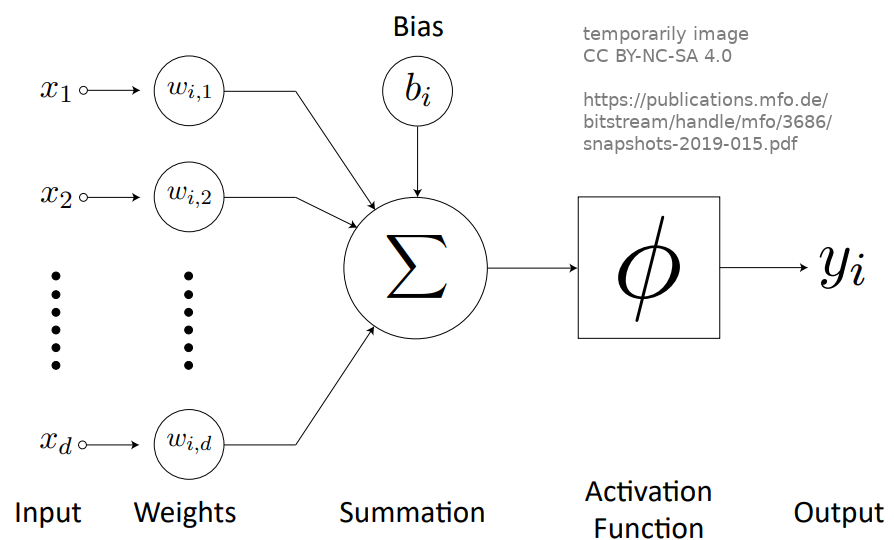
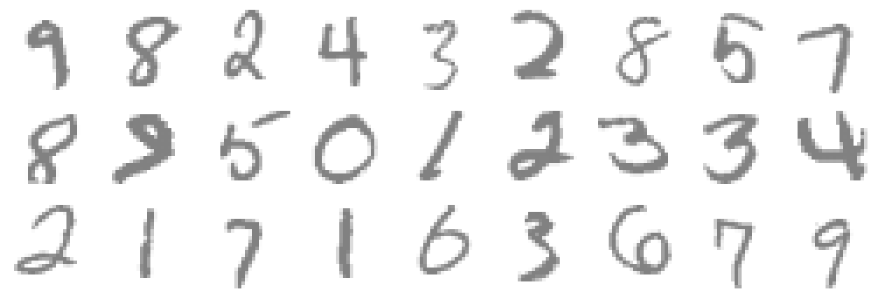

Can I read your number?
You
3
AI
Train the Network!
You
Confidences
3
Computer
How does it work?
What is a neural network?
Neural networks are mathematical structures which are motivated by how our human brain works. They work with input values, a series of artificial neurons in one or more layers, and output values. Inside an individual computational neuron you can find weights and biases, which are numbers that can change, and functions like sums and the so called activation functions:
In the case of this exhibit (Neural Numbers), we use an artificial network with 28 x 28 inputs, which are the colour pixel values for the input handwritten number, and one layer of 100 neurons. The output are 10 values, which are the confidence that the input matches one of the numbers from 0 to 9. The default activation function we use is the so called Rectified Linear Unit (ReLU): it just passes on the value of the input, if it is positive, and 0, if it is negative. (In Expert Mode you can choose different activation functions).
What is a Neural Network?
How does the network learn?
The neural networks learns by iteratively adjusting its weights and biases. For this, so called Training Data, is fed into the network. This is for example the picture of the number 8. Then the weights and biases of the network are adjusted, such that the output confidence of the number 8 is higher than the others. This adjustments are done gradually and depend on a learning rate. The default technique for this adjustment is called Gradient Descent. (In Expert Mode you can choose different learning methods).
How Does the Network Learn?
What is training data?
Training data is the basis to make a neural network do what you desire. It is usually a large set of sample inputs combined with the desired outputs. Often a big part of the training data (for example 80%) is used to train the network, while the remaining part (for example 20%) is used to test the network and see its performance / accuracy. Training data is very valuable, and fortunately there are open databases like the MNIST database we used for this exhibit.
In the case of this exhibit (Neural Numbers), we have 70 000 images of handwritten numbers (input) and the number it depicts:
The training data is “unified or cleaned”, all pictures are 28 x 28 pixels and the image drawn is centered. Whenever you draw a number, your drawing will be transformed to such a sample image.
You
Normalized Image